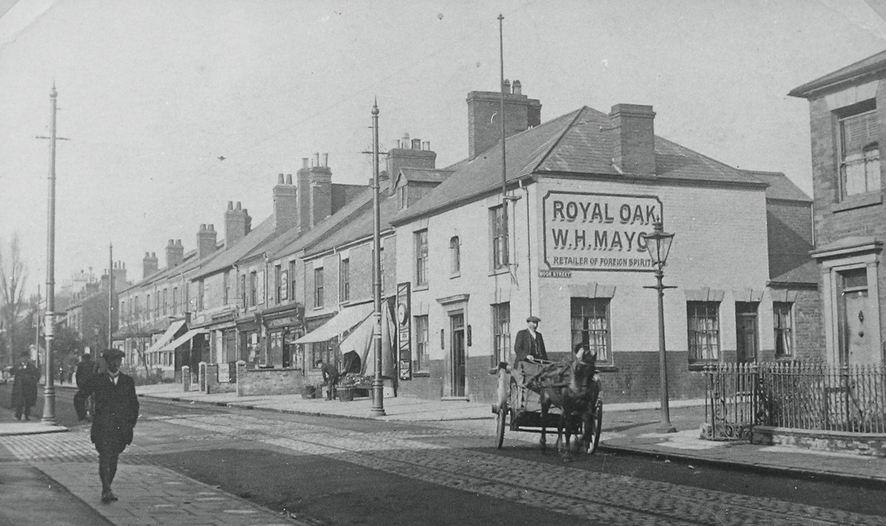

The Royal Oak The Royal Oak stands in prime position on the corner of Earlsdon Street and Moor Street. Externally it has changed little since the day it was opened in 1859. Very little change took place in the licensees either. Opened in 1859 by John Sabin, a young man who came from a family of publicans, he was already familiar with the pub business, but unfortunately he didn't live long enough either to enjoy it or to make a go of it; he died at the early age of 31, leaving behind a young widow, Sarah. Moving in to help her run the pub, young Richard Welton was obviously on to a good thing, and after a short delay for decency's sake the couple were married and Richard took over the license, which he held until his death. Beer was not the only commodity to be sold at the Oak at this time, Richard was also a butcher, killing beasts in a slaughterhouse at the back of the pub and selling the meat over the bar. Outliving Sarah by 7 years, Richard died in 1895 and the Oak then became the property of Northampton Brewery, with William Mayo, a young Earlsdon lad born in Arden Street, as licensee, although two years later it was taken over by Robinsons Brewery, Burton on Trent in 1897 and again by Ind Coope in 1929, with Mayo still in charge. Over his 35 years at the Oak, his sturdy figure became a familiar sight to every Earlsdon resident. He was followed for a short period by JF Taylor, whose successor Leonard Lawless was again to serve the Oak for over 30 years. He became just as familiar as Mayo to every Earlsdonite. In the 1950s Harry Lawless took over the tenancy from his father and over the years put together an interesting collection of memorabilia and many items were gifts from customers. There were wine bottles hanging from the ceiling, German bayonets and an old pipe about 2 feet long which hung on the wall. There was an unusual styled 'Laughing Cavalier' and a beautiful brass horse mounted on velvet which adorned the fireplace. The current licensee is continuing the tradition of maintaining a 'locals' pub with no gimmicks, just good beer. |